네이버 블로그 '느루살림'(옛 이름 요즘생활 연구소) 꾸미기용 이미지 모음입니다. 2026-11-09 제작. 색은 크림 #F6F1E7 · 세이지 #8FA98F · 진녹색 #3F5A4A · 테라코타 #C77B5A, 글꼴은 고운바탕(이름)과 Pretendard(본문)입니다. 사진은 생성형 이미지(Higgsfield Soul 2)이고 실제 장소·제품 사진이 아닙니다.
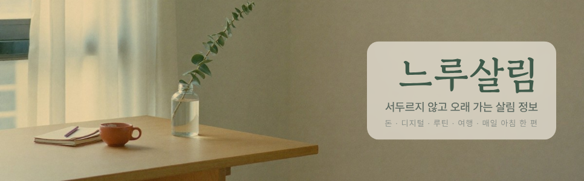
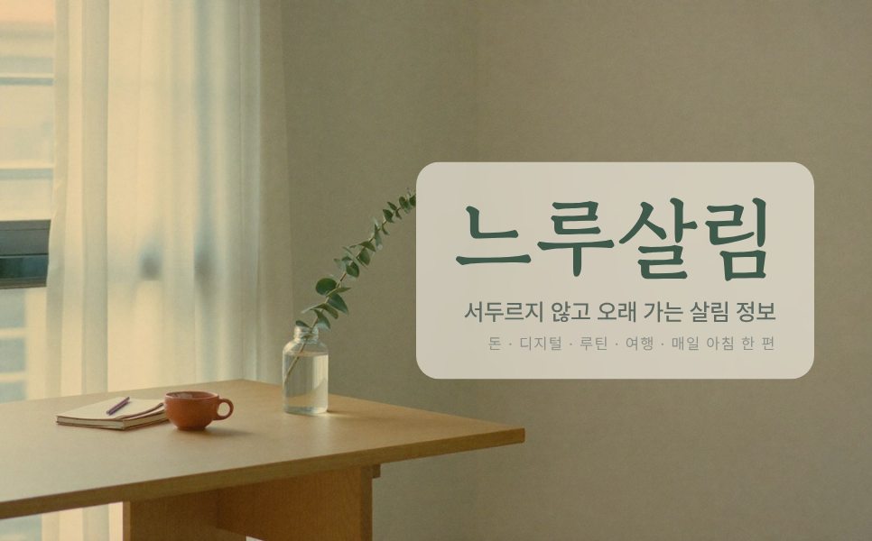
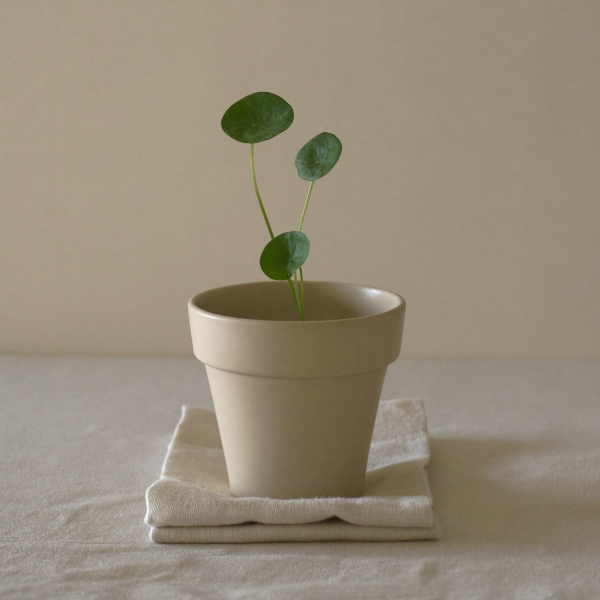
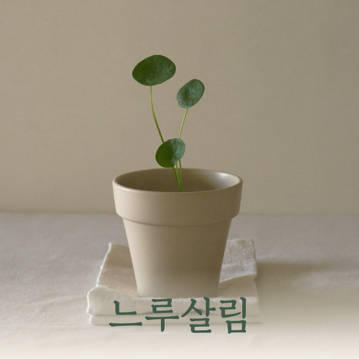
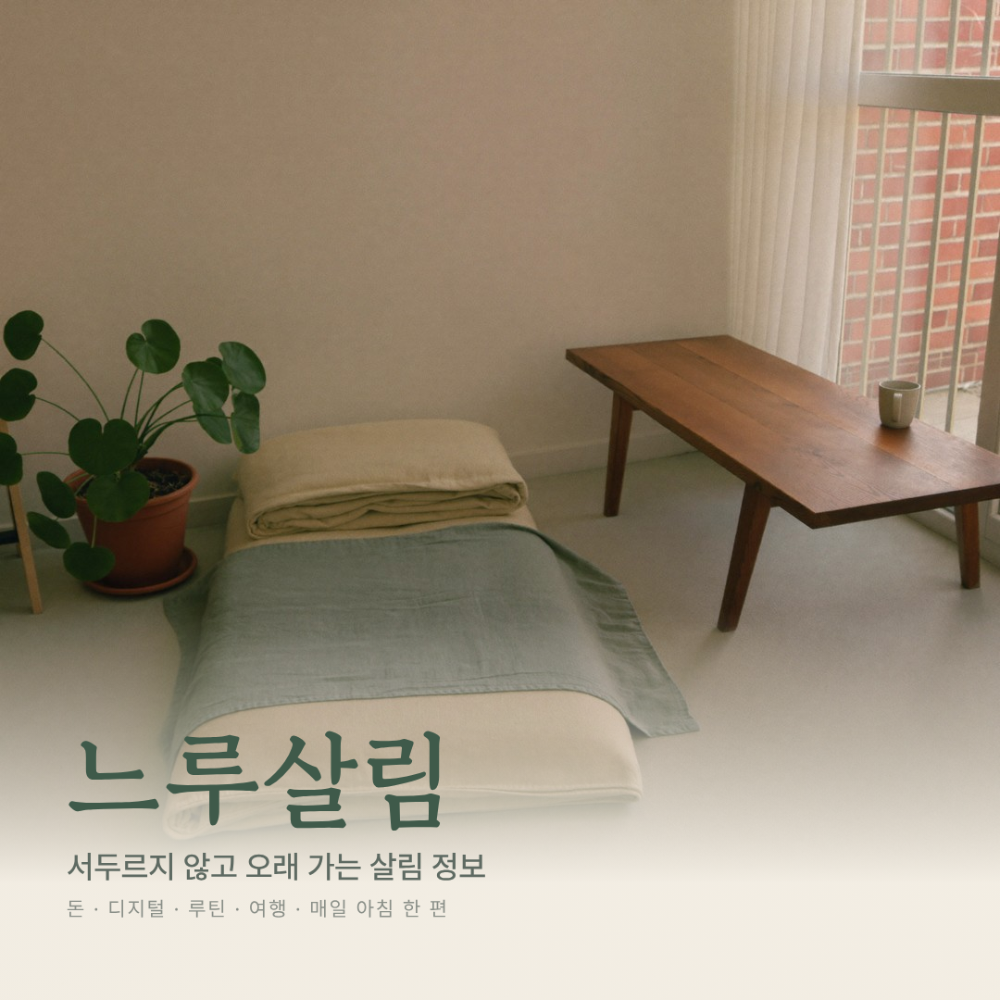
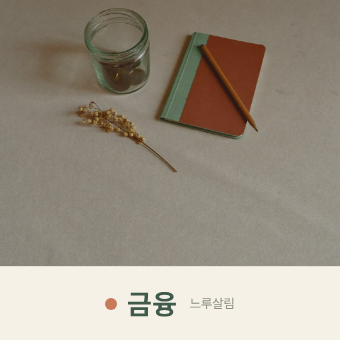
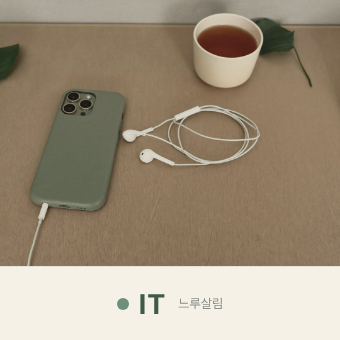
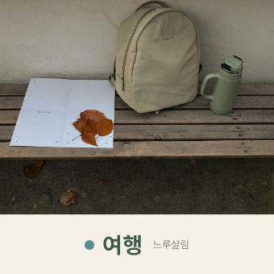
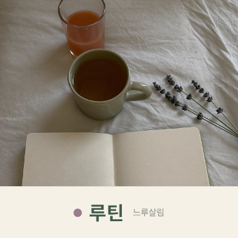
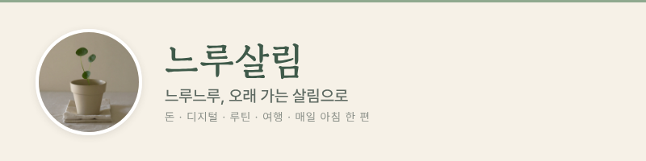
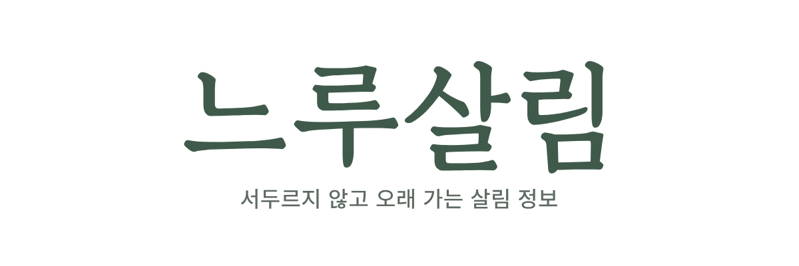
원본 사진(글자 없음): title_bg.jpg · cover.jpg · profile.jpg · widget_money.jpg · widget_digital.jpg · widget_travel.jpg · widget_routine.jpg
느루살림, 별명 느루살림, 소개글 서두르지 않고 오래 가는 살림 정보. 돈 · 디지털 · 루틴 · 여행, 매일 아침 한 편. 프로필 이미지는 profile_600x600.png, 모바일앱 커버 이미지는 mobile_cover_1080x1080.png.금융 IT 여행 루틴을 만들고 주제분류는 금융=비즈니스·경제, IT=IT·컴퓨터, 여행=국내여행, 루틴=일상·생각. 기존 글은 글 관리에서 여러 개 선택 → 카테고리 변경으로 옮깁니다(지우지 않습니다).#F6F1E7, 본문 영역 흰색, 글자색 #3C3632, 링크·강조색 #3F5A4A.카테고리URL 자리는 내 블로그에서 해당 카테고리를 눌렀을 때의 주소.<a href="카테고리URL"><img src="https://hoonstar.github.io/yojeum-lab-feed/brand/neurusalim/widget_money_340.png" width="170" alt="금융"></a> <a href="카테고리URL"><img src="https://hoonstar.github.io/yojeum-lab-feed/brand/neurusalim/widget_digital_340.png" width="170" alt="IT"></a> <a href="카테고리URL"><img src="https://hoonstar.github.io/yojeum-lab-feed/brand/neurusalim/widget_travel_340.png" width="170" alt="여행"></a> <a href="카테고리URL"><img src="https://hoonstar.github.io/yojeum-lab-feed/brand/neurusalim/widget_routine_340.png" width="170" alt="루틴"></a>
위젯 이미지는 이 주소에서 바로 불러와도 되고, 네이버에 올린 이미지 주소로 바꿔도 됩니다. 위젯 표시 폭은 170px이라 340px 이미지가 선명하게 보입니다.
피클, 내 네이버 블로그를 '느루살림'으로 새로 꾸며 줘. 재료와 순서는 이 페이지에 다 있어: https://hoonstar.github.io/yojeum-lab-feed/brand/neurusalim/ 1) 블로그명·별명을 느루살림으로, 소개글은 페이지의 문장 그대로. 2) 프로필은 profile_600x600.png, 모바일 커버는 mobile_cover_1080x1080.png, PC 타이틀은 title_966x300.png(높이 300, 제목 표시 끔). 3) 카테고리 금융·IT·여행·루틴을 만들고 주제분류를 맞춘 뒤, 기존 글을 테마에 맞게 옮겨. 글은 지우지 마. 4) 위젯직접등록으로 카테고리 배너 4개를 페이지의 HTML 그대로 넣고, 카테고리URL만 내 블로그 주소로 바꿔. 5) 끝나면 바뀐 화면을 캡처해서 보여 줘. 로그인·결제·탈퇴 같은 계정 설정은 건드리지 마.
| 항목 | 값 |
|---|---|
| 블로그명 · 별명 | 느루살림 |
| 소개글 | 서두르지 않고 오래 가는 살림 정보. 돈 · 디지털 · 루틴 · 여행, 매일 아침 한 편 |
| 뜻 | 느루: 한꺼번에 몰아치지 않고 오래도록(순우리말) + 살림 |
| 카테고리 | 금융 / IT / 여행 / 루틴 |
| 색 | 크림 #F6F1E7 · 세이지 #8FA98F · 진녹색 #3F5A4A · 테라코타 #C77B5A · 글자 #3C3632 |
| 글꼴 | 고운바탕(이름) · Pretendard(본문) |